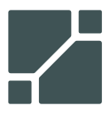

Configured for US915 (902–928 MHz ISM, FCC Part 15.247). Click the map to add gateways, or load a KMZ/KML of sites. The tool pulls public terrain (AWS Terrarium DEM), runs a knife-edge diffraction path-loss model from every gateway, and shades the combined (best-server) coverage.
Model: free-space path loss + ITU-R P.526 single knife-edge diffraction over the terrain profile, 4/3-earth curvature. SNR = RSSI − thermal noise floor (−174 + 10·log₁₀(BW) + NF). Terrain: AWS Terrain Tiles. This is a planning estimate, not a guarantee — it ignores clutter (buildings, foliage), multipath, and rain. Validate critical links in the field.